有机化学考研每日一题 v1
条评论整理自微信公众号“有机考研每日一题”；
约定俗成：邢四=邢其毅. 基础有机化学（第四版）
-
[2018-09-19] 选择题
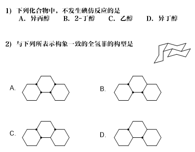
-
[2018-09-18] 完成题
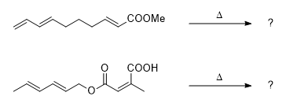
-
[2018-09-17] 完成题
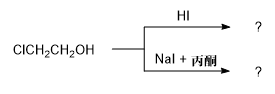
-
[2018-09-16] 合成题
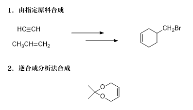
-
[2018-09-15] 选择题
西北大学2016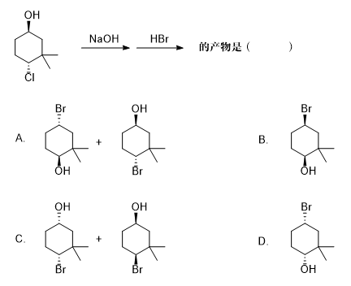
-
[2018-09-14] 完成题
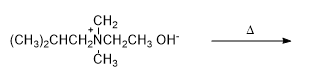
-
[2018-09-13] 机理题
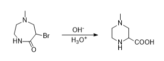
-
[2018-09-12] 完成题
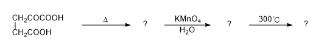
-
[2018-09-11] 完成题
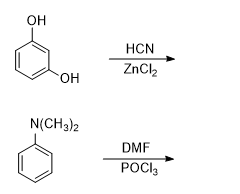
-
[2018-09-10] 机理题
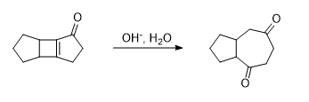
-
[2018-09-09] 完成题
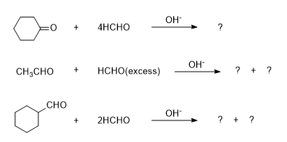
-
[2018-09-08] 完成题
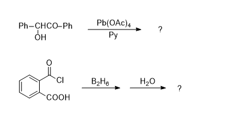
-
[2018-09-07] 完成题
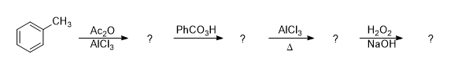
-
[2018-09-06] 选择题
1.下列叙述错误的是（ ）
华南理工大学2001A.葡萄糖在酸性水溶液中有变旋现象B.糖苷既不与菲林试剂作用，也不与托伦试剂作用，在酸性水溶液中没有变旋现象C.虽然D-果糖不是D-葡萄糖的差向异构体，但都可以生成同一糖脎D.麦芽糖、蔗糖都是还原糖2.下列化合物互为差向异构体的是（ ）
上海交通大学2003A.D-葡萄糖与L-葡萄糖B.α-D-葡萄糖与ß-D-葡萄糖C.α-D-甲基葡萄糖与L-葡萄糖D.D-葡萄糖与D-果糖 -
[2018-09-05] 完成题
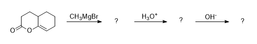
-
[2018-09-04] 完成题
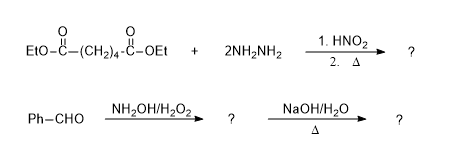
-
[2018-09-03] 完成题
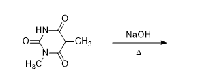
-
[2018-09-02] 完成题
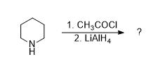
-
[2018-09-01] 完成题
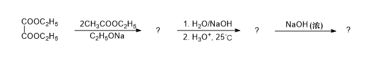
-
[2018-08-31] 完成题
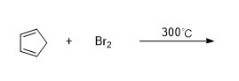
-
[2018-08-30] 完成题
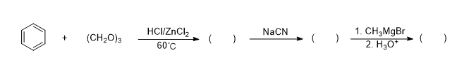
-
[2018-08-29] 完成题
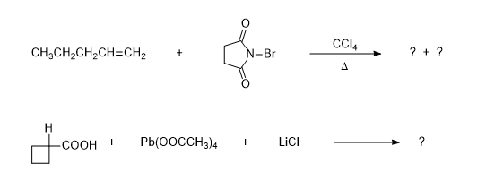
-
[2018-08-28] 完成题
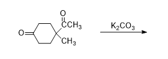
-
[2018-08-27] 化合物A与\ce{Br2}加成的主要产物是( )
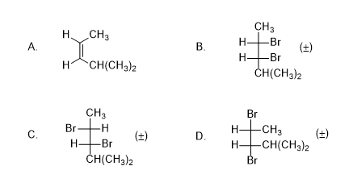
-
[2018-08-26] 完成题
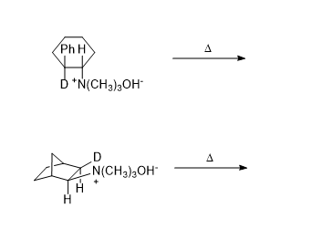
-
[2018-08-25] 下列化合物中，可用于制备格氏试剂的是( )
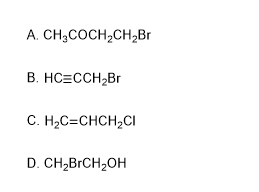
-
[2018-08-24] 完成题
Tips:[1,2]-Wittig rearrangement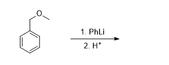
-
[2018-08-23] 完成题
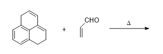
-
[2018-08-22] 下列化合物中氮原子碱性由强到弱依次顺序为：
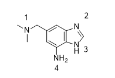
-
[2018-08-21] 完成题
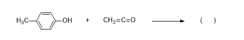
-
[2018-08-20] 完成题
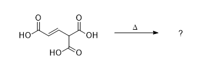
-
[2018-08-19] 完成题
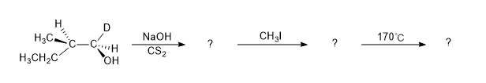
-
[2018-08-18] 将下列各化合物按其pKa值由小到大排序：
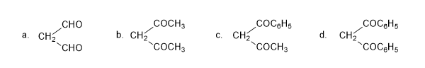
-
[2018-08-17] 芳香醚的Birch还原
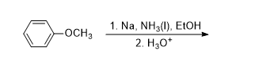
-
[2018-08-16] 完成题
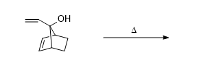
-
[2018-08-15] 完成题
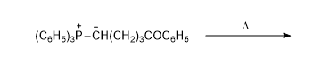
-
[2018-08-14] Fries重排，酚的溴代
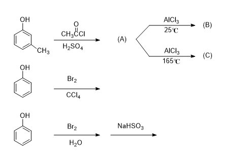
-
[2018-08-13] 完成题
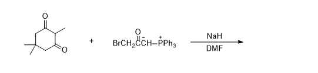
-
[2018-08-12] 酮酸的反应 :
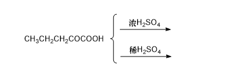
-
[2018-08-11] 选择题
下列反应，可用来制备
1,5-二羰基化合物的是：A.
Michael加成B.Mannich反应C.Haworth反应D.Dieckmann反应 -
[2018-08-10] 完成题
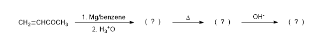
-
[2018-08-09] 机理题
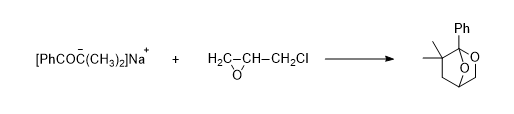
-
[2018-08-08] 完成题
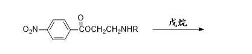
-
[2018-08-07] 羟醛缩合
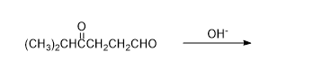
-
[2018-08-06] 完成题
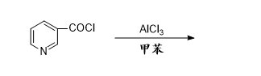
-
[2018-08-05] 完成题
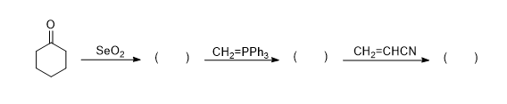
-
[2018-08-04] 完成题
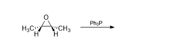
-
[2018-08-03] 完成题
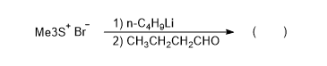
-
[2018-08-02] 完成题
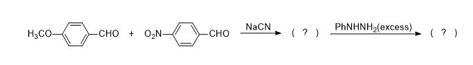
-
[2018-08-01] 杀虫杀菌剂H结构如下，它是否具有手性？它有多少种立体异构？
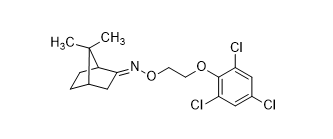
-
[2018-07-31] 反应活性比较
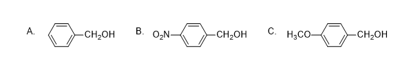
-
[2018-07-30] 氢碳酸酸性比较
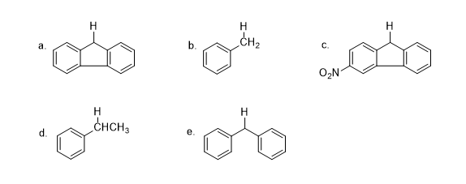
-
[2018-07-29] 下列化合物在稀酸溶液中能水解的是（）
-
[2018-07-28] 完成题
-
[2018-07-27] 下列化合物在酸催化下反应速度最快的是（ ）
- [2018-07-26] 完成题
Tips: 邢四 Page 898
本文标题：有机化学考研每日一题 v1
文章作者：Michael Chen
发布时间：2019-02-09
最后更新：2019-02-09
原始链接：https://mchen.xyz/post/orc-daily-questions-v1.html
版权声明：本博客所有文章除特别声明外，均采用 CC BY-NC-SA 3.0 CN 许可协议。转载请注明出处！